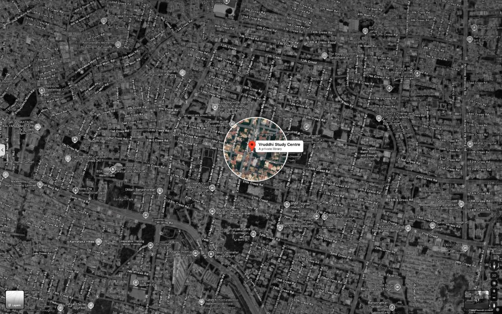
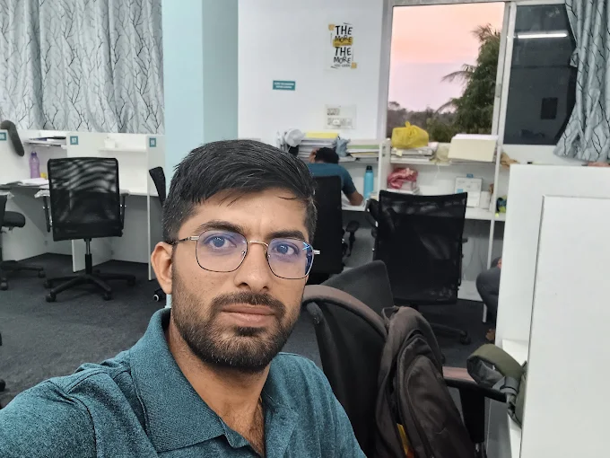
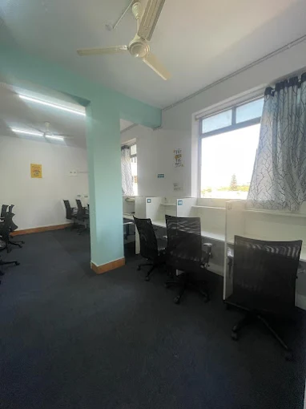
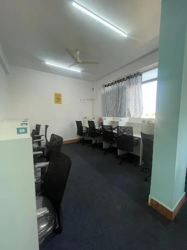

Why we exist
Ambition needs a room that doesn’t fight you. Vruddhi is built for attention—quiet enough to settle, bright enough to stay, flexible enough to fit how you work.
Study Centre · Co-working
A quiet, well-lit space for long study days—and a customizable co-working setup for freelancers, startups, and small teams.

Pull up ↗Chapter 01
Ambition needs a room that doesn’t fight you. Vruddhi is built for attention—quiet enough to settle, bright enough to stay, flexible enough to fit how you work.
Students on long prep cycles. Freelancers who need a real desk and room for calls. SMEs, startups, and small remote teams who want a space that can wear their culture.
Numbered seats. Soft carpet. Strong light. Steady ventilation. An ambience that makes repeating days feel possible.
Chapter 02 · What we are
Vruddhi is a study centre and a co-working space under the same roof—two offerings, one address, designed so focus has somewhere reliable to land.
Same care for calm. Same respect for time. Different setups depending on whether you’re preparing, freelancing, or running a small team.
A private-library feel for exams, reading, and deep preparation—built around ambience and routine.
For freelancers, SMEs, startups, and small remote teams—ready as a seat today, or shaped as your team’s space.
Chapter 03 · What we stand for
Quiet rooms, strong lighting, and ventilation aren’t extras—they’re the product. The space should help you stay.
We design for the person who returns tomorrow. A dedicated seat becomes a ritual. Ritual becomes progress.
Simple memberships. Honest language. No theatre between you and a focused day.
Study and co-working ask different things of a room. Both still deserve light, courtesy, and calm.
Enter
Chapter 04 · Co-working, for real teams
We’re expanding Vruddhi beyond study—so small businesses and builders get a serious desk culture without renting a noisy office.

A no-brainer seat: walk in, plug in, take calls, ship work. Same calm backbone as the study centre—with room to operate like a professional.

Tailor tables, partitions, glass, and flow so the room matches how your team collaborates.

Customize signage, seating density, and the vibe clients and teammates should feel.

A shared home base—quiet enough for deep work, flexible enough for huddles when the week needs them.
The drop
21st Main Rd, Banashankari 2nd Stage,
Banashankari, Bengaluru, Karnataka 560070